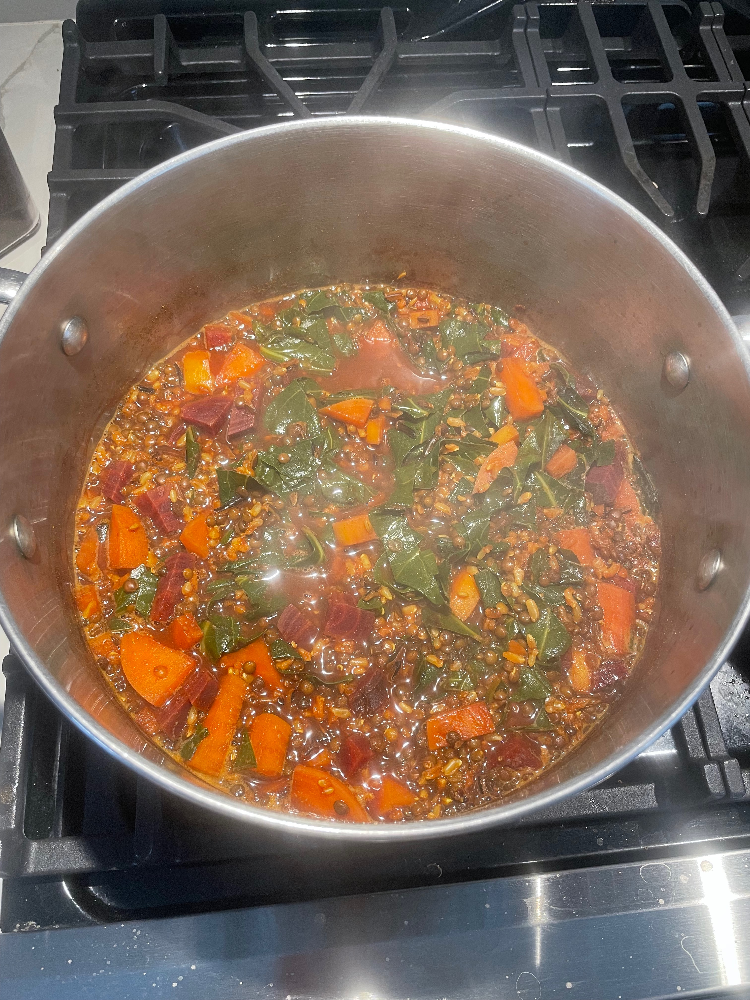

Kitchari recipe
Description
This is delicious kitchari recipe that features seasonal vegetables.
Ingredients
Wild rice
Lentils
Seasonal vegetables
Spices
Steps
Boil rice and lentils.
Add water and spices.
Add vegetables.
